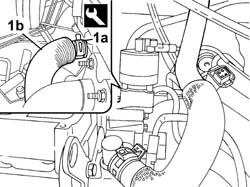

1088D18 HOSE BETWEEN RIGID PIPE AND THERMOSTAT - R.R.
- Path
- Procedures > 10 ENGINE > 1088 ENGINE COOLING > 1088D COOLANT PIPES AND HOSES > 1088D18 HOSE BETWEEN RIGID PIPE AND THERMOSTAT - R.R.
- Kind
- repair procedure (removal / refitting; the operation number is the code)
- Applies to
- engines: 2.0 16v; all production periods
- Interactive page
- https://sloeber94.github.io/elrnDB-fUlss/en/#/179007196
Applies to: engines: 2.0 16v; all production periods
 Removing
Removing
 Refitting
RefittingOp. 7055B54 UNDER-ENGINE GUARD - R R
- Position a suitable container for collecting the coolant.
1. Using special pliers, open the band retaining the hose to the thermostat (1a) and the band securing the hose to the rigid pipe, then remove the hose between the rigid pipe and the thermostat (1b).
 | Description | Code | Function |
|---|---|---|---|
. | Caliper | 1.881.138.000 | Removing bands |

Applies to: engines: 2.0 16v; all production periods
Refitting
Removing- Fit the hose and renew the fastenings using the tool.
| Description | Code | Function |
|---|---|---|---|
. | Caliper | 1.881.138.000 | Removing bands |